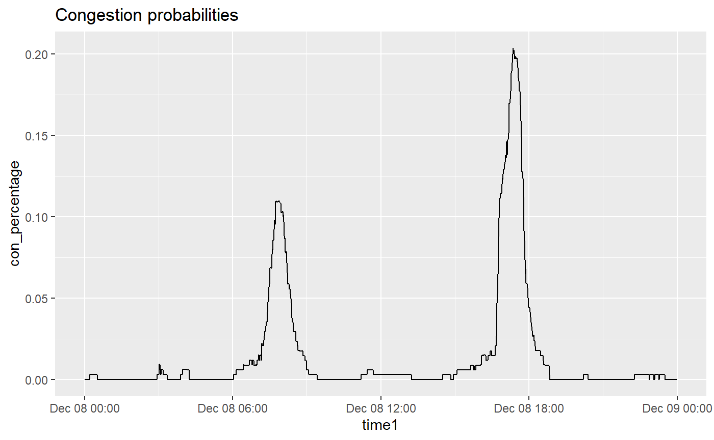
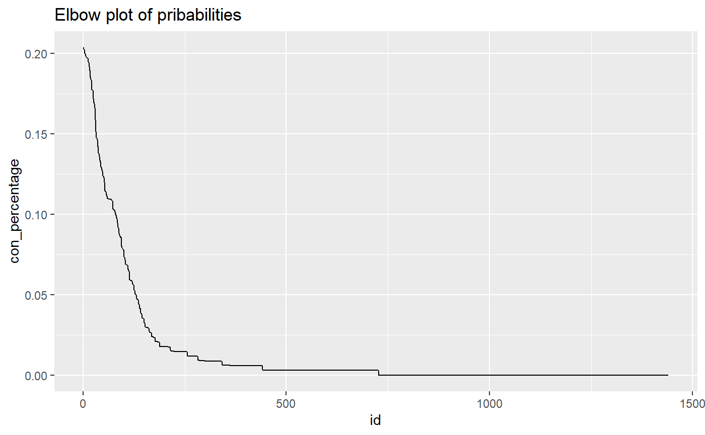
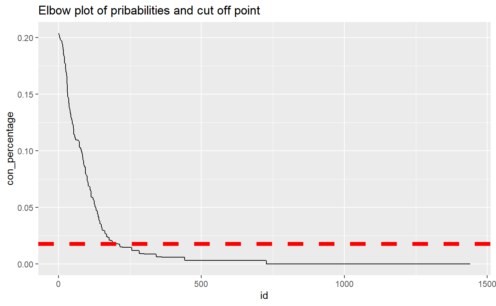

Description_functions.Rmd\begin{abstract} Congestion detection is one of the key steps to reduce delays and associated costs in traffic management. With the increasing usage of GPS base navigation, promising speed data is now available. This study utilizes such extensive historical probe data to detect spatio-temporal congestion by mining historical speed data. The detected congestion were further classified as Recurrent and Non Recurrent Congestion (RC, NRC). This work presents a big data driven expert system for identifying both recurrent and non-recurrent congestion and analyzing the delay and cost associated with them. For this purpose, first normal and anomalous days were classified based on travel rate distribution. Later, we utilized Bayesian change point detection to segment speed signal and detect temporal congestion.In this study, a statistical big data mining methodology is developed and the robustness of the proposed methodology is tested on probe data for 2016 calendar year, in Des Moines region, Iowa, US. The proposed framework is self adaptive because it does not rely on additional information for detecting spatio-temporal congestion. Therefore, it addresses the limits of prior work in NRC detection. The optimum value for congestion percentage threshold is identified by Elbow cut off method. ####Congestion detection with sample data Here we use a sample dataset in our package “dataset” to show the performance of the Congestion_detection function.
data(package = "Dcongestion", dataset)
visual<-Congestion_detection(dataset)By loading a preprocessed data with Congestion_detection() function and visualizing the output we can observe the temporal congestions in our datafram. In this particular example we have morning an evening pick traffic hours that has been idenfitied with the proposed framework. #### Loading preprocessed dataset and visualizing the out put
library(ggplot2)
data(package = "Dcongestion", visual)
visual$time1 <-as.POSIXct(as.character(visual$time),format="%H:%M:%S")
visual$date1 <-as.POSIXct(as.character(visual$date),format="%Y-%m-%d")
ggplot(data=visual,aes(x=time1,y=as.Date(date1)))+geom_tile(aes(fill = visual))+scale_fill_gradient(low="red",high="green",na.value="white")+ theme_bw()+ylab("")+ theme(panel.grid = element_blank() )To get a sense of what actual dataset looks like and how the function extracts the congetions we further ploted the actual dataset. #### comparison of actual dataset and function’s out put
data(package = "Dcongestion", dataset)
dataset$time1 <-as.POSIXct(as.character(dataset$time),format="%H:%M:%S")
dataset$date1 <-as.POSIXct(as.character(dataset$date),format="%Y-%m-%d")
ggplot(data=dataset,aes(x=time1,y=as.Date(date1)))+geom_tile(aes(fill = Speed))+scale_fill_gradient(low="red",high="green",na.value="white")+ theme_bw()+ylab("")+ theme(panel.grid = element_blank() )As green colour refers to normal speed flow while red colour refers to reduced speed values. By comparing the above Congestion_detection function out put and actual dataset we can that temporal congestions has been identified.
We can further calculate the delay associated to congestions by delay() function. #### Delay calculation
Dcongestion::delay(visual,0.6)
#> [1] 1.898703In order to identify and classify detected congestions to Recurrent and non-recurrent. We use an elbow cut of method on the congestion labeled data points. cut of point can be calculated by elbow_finder() function.
r<-elbow_viusal(visual)elbow_finder() function was used to calculate the probabilities associated to each time instance. Here we use a preprocessed dataset “r” in order to show the probabilities plot and elbow plot. ####Elbow cut off visualization
library(dplyr)
data(package = "Dcongestion", r)
sorted_percentages <- r %>% arrange(desc(con_percentage))
ggplot(data=r,aes(x=time1, y=con_percentage))+geom_line()+ggtitle('Congestion probabilities')
ordered_data <- sorted_percentages %>% mutate(id = row_number())
ggplot(data=ordered_data,aes(x=id, y=con_percentage))+geom_line()+ggtitle('Elbow plot of pribabilities')
el_thre <- Dcongestion::elbow_finder(ordered_data[, 5], ordered_data[, 1])
ggplot(data=ordered_data,aes(x=id, y=con_percentage))+geom_line()+ geom_hline(yintercept=el_thre[2], linetype="dashed", color = "red", size=2)+ggtitle('Elbow plot of pribabilities and cut off point') The cut off red line shows the cut off point. That is our theshold that identifies recurrent congestions that have a probability higher than an identified threshold value. The values below threshold value are considered as non recurrent and values higher than threshold are considered as recurrent.